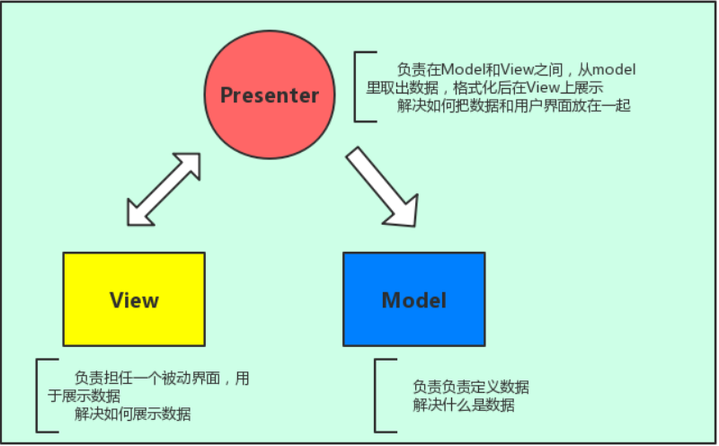

<!DOCTYPE html>


  <html class="light page-post">


<head><meta name="generator" content="Hexo 3.8.0">
  <meta charset="utf-8">
  
  <title>MVVM发展历程 | pegerys&#39; Hexo</title>

  <meta name="viewport" content="width=device-width, initial-scale=1, maximum-scale=1">

  
    <meta name="keywords" content="MVVM,">
  

  <meta name="description" content="1. 三层架构三层架构就是将整个业务应用划分为：UI层：界面层（User Interface layer）BLL层：业务逻辑层（Business Logic Layer）DAL层：数据访问层（Data access layer） 区分层次的目的是为了“高内聚低耦合”在软件体系架构设计中，分层式结构是最常见，也是最重要的一种结构。微软推荐的分层式结构一般分为三层，从下至上分别为：数据访问层、业务逻辑">
<meta name="keywords" content="MVVM">
<meta property="og:type" content="article">
<meta property="og:title" content="MVVM发展历程">
<meta property="og:url" content="http://yoursite.com/2019/06/19/MVVM发展历程/index.html">
<meta property="og:site_name" content="pegerys&#39; Hexo">
<meta property="og:description" content="1. 三层架构三层架构就是将整个业务应用划分为：UI层：界面层（User Interface layer）BLL层：业务逻辑层（Business Logic Layer）DAL层：数据访问层（Data access layer） 区分层次的目的是为了“高内聚低耦合”在软件体系架构设计中，分层式结构是最常见，也是最重要的一种结构。微软推荐的分层式结构一般分为三层，从下至上分别为：数据访问层、业务逻辑">
<meta property="og:locale" content="default">
<meta property="og:image" content="http://yoursite.com/2019/06/19/MVVM发展历程/1.png">
<meta property="og:image" content="http://yoursite.com/2019/06/19/MVVM发展历程/2.png">
<meta property="og:updated_time" content="2021-07-30T03:04:48.155Z">
<meta name="twitter:card" content="summary">
<meta name="twitter:title" content="MVVM发展历程">
<meta name="twitter:description" content="1. 三层架构三层架构就是将整个业务应用划分为：UI层：界面层（User Interface layer）BLL层：业务逻辑层（Business Logic Layer）DAL层：数据访问层（Data access layer） 区分层次的目的是为了“高内聚低耦合”在软件体系架构设计中，分层式结构是最常见，也是最重要的一种结构。微软推荐的分层式结构一般分为三层，从下至上分别为：数据访问层、业务逻辑">
<meta name="twitter:image" content="http://yoursite.com/2019/06/19/MVVM发展历程/1.png">

  

  
    <link rel="icon" href="/favicon.ico">
  

  <link href="/css/styles.css?v=c114cbeddx" rel="stylesheet">


  
    <link rel="stylesheet" href="/css/personal-style.css">
  

  
<!-- Google Analytics -->
<script type="text/javascript">
(function(i,s,o,g,r,a,m){i['GoogleAnalyticsObject']=r;i[r]=i[r]||function(){
(i[r].q=i[r].q||[]).push(arguments)},i[r].l=1*new Date();a=s.createElement(o),
m=s.getElementsByTagName(o)[0];a.async=1;a.src=g;m.parentNode.insertBefore(a,m)
})(window,document,'script','//www.google-analytics.com/analytics.js','ga');

ga('create', 'UA-38189205-1', 'auto');
ga('send', 'pageview');

</script>
<!-- End Google Analytics -->


  
  <script type="text/javascript">
    var _hmt = _hmt || [];
    (function() {
      var hm = document.createElement("script");
      hm.src = "//hm.baidu.com/hm.js?57e94d016e201fba3603a8a2b0263af0";
      var s = document.getElementsByTagName("script")[0];
      s.parentNode.insertBefore(hm, s);
    })();
  </script>


  
  <script type="text/javascript">
	(function(){
	    var bp = document.createElement('script');
	    var curProtocol = window.location.protocol.split(':')[0];
	    if (curProtocol === 'https') {
	        bp.src = 'https://zz.bdstatic.com/linksubmit/push.js';        
	    }
	    else {
	        bp.src = 'http://push.zhanzhang.baidu.com/push.js';
	    }
	    var s = document.getElementsByTagName("script")[0];
	    s.parentNode.insertBefore(bp, s);
	})();
  </script>


  
    <script async src="https://busuanzi.ibruce.info/busuanzi/2.3/busuanzi.pure.mini.js"></script>
    <link rel="stylesheet" href="//cdn.bootcss.com/font-awesome/4.3.0/css/font-awesome.min.css">
  

</head>
</html>
<body>


  
    <span id="toolbox-mobile" class="toolbox-mobile">盒子</span>
  

  <div class="post-header CENTER">
   
  <div class="toolbox">
    <a class="toolbox-entry" href="/">
      <span class="toolbox-entry-text">盒子</span>
      <i class="icon-angle-down"></i>
      <i class="icon-home"></i>
    </a>
    <ul class="list-toolbox">
      
        <li class="item-toolbox">
          <a class="CIRCLE" href="/archives/" rel="noopener noreferrer" target="_self">
            博客
          </a>
        </li>
      
        <li class="item-toolbox">
          <a class="CIRCLE" href="/category/" rel="noopener noreferrer" target="_self">
            分类
          </a>
        </li>
      
        <li class="item-toolbox">
          <a class="CIRCLE" href="/tag/" rel="noopener noreferrer" target="_self">
            标签
          </a>
        </li>
      
        <li class="item-toolbox">
          <a class="CIRCLE" href="/link/" rel="noopener noreferrer" target="_self">
            友链
          </a>
        </li>
      
        <li class="item-toolbox">
          <a class="CIRCLE" href="/about/" rel="noopener noreferrer" target="_self">
            关于
          </a>
        </li>
      
        <li class="item-toolbox">
          <a class="CIRCLE" href="/atom.xml" rel="noopener noreferrer" target="_blank">
            RSS
          </a>
        </li>
      
        <li class="item-toolbox">
          <a class="CIRCLE" href="/search/" rel="noopener noreferrer" target="_self">
            搜索
          </a>
        </li>
      
    </ul>
  </div>


</div>


  <div id="toc" class="toc-article">
    <strong class="toc-title">文章目录</strong>
    <ol class="toc"><li class="toc-item toc-level-1"><a class="toc-link" href="#1-三层架构"><span class="toc-text">1. 三层架构</span></a></li><li class="toc-item toc-level-1"><a class="toc-link" href="#2-MVC"><span class="toc-text">2.MVC</span></a></li><li class="toc-item toc-level-1"><a class="toc-link" href="#3-MVP（MVC-的改良）"><span class="toc-text">3. MVP（MVC 的改良）</span></a></li><li class="toc-item toc-level-1"><a class="toc-link" href="#4-MVVM（MVP-的改良）"><span class="toc-text">4. MVVM（MVP 的改良）</span></a></li></ol>
  </div>


<div class="content content-post CENTER">
   <article id="post-MVVM发展历程" class="article article-type-post" itemprop="blogPost">
  <header class="article-header">
    <h1 class="post-title">MVVM发展历程</h1>

    <div class="article-meta">
      <span>
        <i class="icon-calendar"></i>
        <span>2019.06.19</span>
      </span>

      
        <span class="article-author">
          <i class="icon-user"></i>
          <span>pergery peng</span>
        </span>
      

      
  <span class="article-category">
    <i class="icon-list"></i>
    <a class="article-category-link" href="/categories/MVVM/">MVVM</a>
  </span>


      

      
      <i class="fa fa-eye"></i> 
        <span id="busuanzi_container_page_pv">
           &nbsp热度 <span id="busuanzi_value_page_pv">
           <i class="fa fa-spinner fa-spin"></i></span>℃
        </span>
      
      
    </div>
  </header>

  <div class="article-content">
    
      <h1 id="1-三层架构"><a href="#1-三层架构" class="headerlink" title="1. 三层架构"></a>1. 三层架构</h1><p>三层架构就是将整个业务应用划分为：<br>UI层：界面层（User Interface layer）<br>BLL层：业务逻辑层（Business Logic Layer）<br>DAL层：数据访问层（Data access layer）</p>
<p>区分层次的目的是为了“高内聚低耦合”<br>在软件体系架构设计中，分层式结构是最常见，也是最重要的一种结构。微软推荐的分层式结构一般分为三层，从下至上分别为：数据访问层、业务逻辑层（又或称为领域层）、表示层。</p>
<h1 id="2-MVC"><a href="#2-MVC" class="headerlink" title="2.MVC"></a>2.MVC</h1><p>如下图所示<br><br>代码如下：<br><figure class="highlight plain"><table><tr><td class="gutter"><pre><span class="line">1</span><br><span class="line">2</span><br><span class="line">3</span><br><span class="line">4</span><br><span class="line">5</span><br><span class="line">6</span><br><span class="line">7</span><br><span class="line">8</span><br><span class="line">9</span><br><span class="line">10</span><br><span class="line">11</span><br><span class="line">12</span><br><span class="line">13</span><br><span class="line">14</span><br><span class="line">15</span><br><span class="line">16</span><br><span class="line">17</span><br><span class="line">18</span><br><span class="line">19</span><br><span class="line">20</span><br><span class="line">21</span><br><span class="line">22</span><br><span class="line">23</span><br><span class="line">24</span><br><span class="line">25</span><br><span class="line">26</span><br><span class="line">27</span><br><span class="line">28</span><br><span class="line">29</span><br><span class="line">30</span><br><span class="line">31</span><br><span class="line">32</span><br><span class="line">33</span><br><span class="line">34</span><br><span class="line">35</span><br><span class="line">36</span><br><span class="line">37</span><br><span class="line">38</span><br><span class="line">39</span><br><span class="line">40</span><br><span class="line">41</span><br><span class="line">42</span><br><span class="line">43</span><br><span class="line">44</span><br><span class="line">45</span><br><span class="line">46</span><br><span class="line">47</span><br><span class="line">48</span><br><span class="line">49</span><br><span class="line">50</span><br><span class="line">51</span><br><span class="line">52</span><br><span class="line">53</span><br><span class="line">54</span><br><span class="line">55</span><br><span class="line">56</span><br><span class="line">57</span><br><span class="line">58</span><br><span class="line">59</span><br><span class="line">60</span><br><span class="line">61</span><br><span class="line">62</span><br><span class="line">63</span><br><span class="line">64</span><br><span class="line">65</span><br><span class="line">66</span><br><span class="line">67</span><br><span class="line">68</span><br><span class="line">69</span><br><span class="line">70</span><br><span class="line">71</span><br><span class="line">72</span><br><span class="line">73</span><br><span class="line">74</span><br><span class="line">75</span><br><span class="line">76</span><br><span class="line">77</span><br><span class="line">78</span><br><span class="line">79</span><br></pre></td><td class="code"><pre><span class="line">// 一个关于数据操作，页面展示的 js 文件的mvc的代码组织形式</span><br><span class="line">! function ()&#123;</span><br><span class="line">var view = document.querySelector(&apos;section.message&apos;)</span><br><span class="line"></span><br><span class="line">var model =&#123;</span><br><span class="line">//初始化数据</span><br><span class="line">init: function()&#123;</span><br><span class="line">var APP_ID = &apos;XXX&apos;;</span><br><span class="line">var APP_KEY = &apos;xxx&apos;;</span><br><span class="line">AV.init(&#123; appId: APP_ID, appKey: APP_KEY &#125;);</span><br><span class="line">&#125;,</span><br><span class="line">// 获取数据</span><br><span class="line">fetch: function()&#123;</span><br><span class="line">var query = new AV.Query(&apos;Message&apos;)</span><br><span class="line">return query.find() // Promise 对象</span><br><span class="line">&#125;,</span><br><span class="line">// 新建数据</span><br><span class="line">save: function(name, content)&#123;</span><br><span class="line">var Message = AV.Object.extend(&apos;Message&apos;);</span><br><span class="line">var message = new Message();</span><br><span class="line">return message.save(&#123; // Promise 对象</span><br><span class="line">&apos;name&apos;: name ,</span><br><span class="line">&apos;content&apos;: content</span><br><span class="line">&#125;)</span><br><span class="line">&#125;</span><br><span class="line">&#125;</span><br><span class="line"></span><br><span class="line">var controller = &#123;</span><br><span class="line">view: null,</span><br><span class="line">model: null,</span><br><span class="line">messageList: null,</span><br><span class="line">init: function(view,model)&#123;</span><br><span class="line">this.view = view</span><br><span class="line">this.model = model</span><br><span class="line"></span><br><span class="line">this.messageList = view.querySelector(&apos;#messageList&apos;)</span><br><span class="line">this.form = myForm = view.querySelector(&apos;form&apos;)</span><br><span class="line">this.model.init()</span><br><span class="line">this.loadMessages()</span><br><span class="line">this.bindEvents()</span><br><span class="line">&#125;,</span><br><span class="line">loadMessages: function()&#123;</span><br><span class="line">this.model.fetch().then( (messages) =&gt; &#123;</span><br><span class="line">let array = messages.map((item) =&gt; item.attributes)</span><br><span class="line">array.forEach((item) =&gt; &#123;</span><br><span class="line">let li = document.createElement(&apos;li&apos;)</span><br><span class="line">li.innerText = `$&#123;item.name&#125;: $&#123;item.content&#125;`</span><br><span class="line">let messageList = document.querySelector(&apos;#messageList&apos;)</span><br><span class="line">messageList.appendChild(li)</span><br><span class="line">&#125;)</span><br><span class="line">&#125;, function (error) &#123;</span><br><span class="line">console.log(&apos;提交失败, 请改天再留言&apos;)</span><br><span class="line">&#125;);</span><br><span class="line">&#125;,</span><br><span class="line">bindEvents: function()&#123;</span><br><span class="line">this.form.addEventListener(&apos;submit&apos;, function (e)&#123;</span><br><span class="line">e.preventDefault()</span><br><span class="line">this.saveMessage()</span><br><span class="line">&#125;.bind(this)) // 用bind将this绑定到 funtion 里面</span><br><span class="line">&#125;,</span><br><span class="line">saveMessage: function()&#123;</span><br><span class="line">let myForm = this.form</span><br><span class="line">let content = myForm.querySelector(&apos;input[name=content]&apos;).value</span><br><span class="line">let name = myForm.querySelector(&apos;input[name=name]&apos;).value</span><br><span class="line">this.model.save(name, content).then(function(object) &#123;</span><br><span class="line">let li = document.createElement(&apos;li&apos;)</span><br><span class="line">if(object.attributes.name !== &apos;&apos; &amp;&amp; object.attributes.content !== &apos;&apos;) &#123;</span><br><span class="line">li.innerText = `$&#123;object.attributes.name&#125;: $&#123;object.attributes.content&#125;`</span><br><span class="line">let messageList = document.querySelector(&apos;#messageList&apos;)</span><br><span class="line">messageList.appendChild(li)</span><br><span class="line">myForm.querySelector(&apos;input[name=content]&apos;).value = &apos;&apos;</span><br><span class="line">myForm.querySelector(&apos;input[name=name]&apos;).value = &apos;&apos;</span><br><span class="line">&#125;</span><br><span class="line">&#125;)</span><br><span class="line">&#125;</span><br><span class="line">&#125;</span><br><span class="line">controller.init(view, model)</span><br><span class="line"></span><br><span class="line">&#125;.call()</span><br></pre></td></tr></table></figure></p>
<p>缺点：<br>视图与控制器间的过于紧密的连接，不利于View的组件化，即可复用性低<br>视图对模型数据的低效率访问<br>没有UI环境，Controller的单元测试变得困难</p>
<h1 id="3-MVP（MVC-的改良）"><a href="#3-MVP（MVC-的改良）" class="headerlink" title="3. MVP（MVC 的改良）"></a>3. MVP（MVC 的改良）</h1><p>MVP与MVC最大的区别就用Presenter将Model和View隔开了，不允许其互相直接通信，所有的消息都是通过Presenter这个中间人来传递。<br>如下图所示：<br></p>
<p>缺点：<br>View层和Presenter层是通过接口连接，在复杂的界面中，维护过多接口的成本很大<br>View和Presenter层的交互会过于频繁，二者联系太过紧密</p>
<h1 id="4-MVVM（MVP-的改良）"><a href="#4-MVVM（MVP-的改良）" class="headerlink" title="4. MVVM（MVP 的改良）"></a>4. MVVM（MVP 的改良）</h1><p>MVVM代表的是Model-View-ViewModel，将MVP中的P换成VM（视图模型），它的依赖关系和MVP是一样的<br>MVVM把View和Model的同步逻辑通过binder自动化了。MVP的Presenter负责的View和Model同步不再需要手动操作，而是交由框架所提供的Binder进行负责<br>Vue.js就是MVVM框架的一种典型实现，它的核心思想为数据驱动和组件化<br>缺点：<br>数据绑定使得 Bug 很难被调试</p>

    
  </div>

</article>


   
  <div class="text-center donation">
    <div class="inner-donation">
      <span class="btn-donation">支持一下</span>
      <div class="donation-body">
        <div class="tip text-center">扫一扫，支持forsigner</div>
        <ul>
        
          <li class="item">
            
              <span>微信扫一扫</span>
            
            
          </li>
        
          <li class="item">
            
              <span>支付宝扫一扫</span>
            
            
          </li>
        
        </ul>
      </div>
    </div>
  </div>


   
  <div class="box-prev-next clearfix">
    <a class="show pull-left" href="/2019/06/03/ajax/">
        <i class="icon icon-angle-left"></i>
    </a>
    <a class="show pull-right" href="/2019/06/25/关于this、call、apply和bind/">
        <i class="icon icon-angle-right"></i>
    </a>
  </div>


</div>


  <a id="backTop" class="back-top">
    <i class="icon-angle-up"></i>
  </a>


  <div class="modal" id="modal">
  <span id="cover" class="cover hide"></span>
  <div id="modal-dialog" class="modal-dialog hide-dialog">
    <div class="modal-header">
      <span id="close" class="btn-close">关闭</span>
    </div>
    <hr>
    <div class="modal-body">
      <ul class="list-toolbox">
        
          <li class="item-toolbox">
            <a class="CIRCLE" href="/archives/" rel="noopener noreferrer" target="_self">
              博客
            </a>
          </li>
        
          <li class="item-toolbox">
            <a class="CIRCLE" href="/category/" rel="noopener noreferrer" target="_self">
              分类
            </a>
          </li>
        
          <li class="item-toolbox">
            <a class="CIRCLE" href="/tag/" rel="noopener noreferrer" target="_self">
              标签
            </a>
          </li>
        
          <li class="item-toolbox">
            <a class="CIRCLE" href="/link/" rel="noopener noreferrer" target="_self">
              友链
            </a>
          </li>
        
          <li class="item-toolbox">
            <a class="CIRCLE" href="/about/" rel="noopener noreferrer" target="_self">
              关于
            </a>
          </li>
        
          <li class="item-toolbox">
            <a class="CIRCLE" href="/atom.xml" rel="noopener noreferrer" target="_blank">
              RSS
            </a>
          </li>
        
          <li class="item-toolbox">
            <a class="CIRCLE" href="/search/" rel="noopener noreferrer" target="_self">
              搜索
            </a>
          </li>
        
      </ul>

    </div>
  </div>
</div>


  
      <div class="fexo-comments comments-post">
    

    

    
    

    

    
    

    

<!-- Gitalk评论插件通用代码 -->
<div id="gitalk-container"></div>

<link rel="stylesheet" href="https://cdn.jsdelivr.net/npm/gitalk@1/dist/gitalk.css">
<script src="https://cdn.jsdelivr.net/npm/gitalk@1/dist/gitalk.min.js"></script>
<script src="//cdn.bootcss.com/blueimp-md5/2.10.0/js/md5.js"></script>
<script>
const gitalk = new Gitalk({
  clientID: '277317290454635afa73',
  clientSecret: '78223c859304da5e8d71bfce136d436c6ff95c37',
  repo: 'blog-comment',
  owner: 'forsigner',
  // 在这里设置一下截取前50个字符串, 这是因为 github 对 label 的长度有了要求, 如果超过
  // 50个字符串则会报错.
  // id: location.pathname.split('/').pop().substring(0, 49),
  id: md5(location.pathname),
  admin: ['forsigner'],
  // facebook-like distraction free mode
  distractionFreeMode: false
})
gitalk.render('gitalk-container')
</script>
<!-- Gitalk代码结束 -->


  </div>

  

  <script type="text/javascript">
  function loadScript(url, callback) {
    var script = document.createElement('script')
    script.type = 'text/javascript';

    if (script.readyState) { //IE
      script.onreadystatechange = function() {
        if (script.readyState == 'loaded' ||
          script.readyState == 'complete') {
          script.onreadystatechange = null;
          callback();
        }
      };
    } else { //Others
      script.onload = function() {
        callback();
      };
    }

    script.src = url;
    document.getElementsByTagName('head')[0].appendChild(script);
  }

  window.onload = function() {
    loadScript('/js/bundle.js?235683', function() {
      // load success
    });
  }
</script>

<script type="text/x-mathjax-config">
    MathJax.Hub.Config({
        tex2jax: {
            inlineMath: [ ["$","$"], ["\\(","\\)"] ],
            skipTags: ['script', 'noscript', 'style', 'textarea', 'pre', 'code'],
            processEscapes: true
        }
    });
    MathJax.Hub.Queue(function() {
        var all = MathJax.Hub.getAllJax();
        for (var i = 0; i < all.length; ++i)
            all[i].SourceElement().parentNode.className += ' has-jax';
    });
</script>
<script src="http://cdn.mathjax.org/mathjax/latest/MathJax.js?config=TeX-AMS-MML_HTMLorMML"></script>
</body>
</html>
